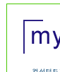
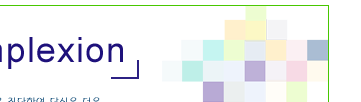
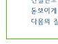
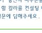
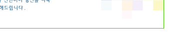

|
|
||||||||||||||||||||||
|  |
 |
 | ||||||||||||||||||||
|  |  |  | ||||||||||||||||||||
|
1. 당신의 머리색은? 밝은 갈색 갈색 붉은기가 도는 갈색 검정색 푸른기가 도는 검정 2. 당신의 눈동자 색은?. 밝은 갈색 갈색 짙은 갈색 회색 검정 3. 당신의 피부톤이 어느 쪽에 가까운지 선택하세요.
4. 당신의 이목구비는? 매우 또렷하다. 보통이다. 또렷하지 않다. 5. 당신의 인상은? 날카롭고 시원스러운 편이다. 다소 차가우면서도 부드러운 편이다. 따뜻함과 부드러우며 침착해보인다. 안색이 밝고 화사한 분위기로 따뜻한 편이다. 6. 당신은 어떤 메이크업을 즐겨하시나요?. 7. 당신의 나이는 어느 정도 입니까? 10대 20대 30대 이상 |
||||||||||||||||||||||